Boom Lift Crawler with Hydraulic Actuation
This example models a boom lift with hydraulic actuation. The lift has 6 hydraulic actuators in the chassis, 7 hydraulic actuators in the boom plus one other passive hydraulic cylinder. The hydraulic network includes directional valves to select the direction of actuation (extend/contract), counterbalance valves to avoid runaway loads, and pilot operated check valves to lock actuators in place. The lift was modeled in CAD, imported into Simscape Multibody, and integrated with the hydraulic model from Simscape Fluids.
A set of test harnesses were created to enable unit testing of the individual actuation systems. Some test models use inverse dynamics to refine the requirements for the actuators.
Contents
Model
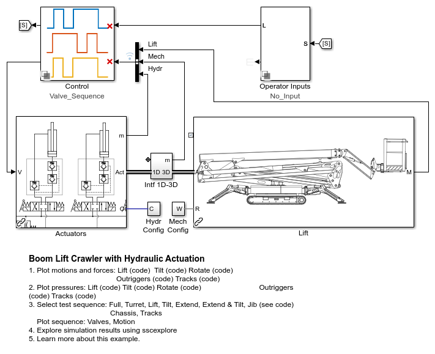Mechanical System
The boom lift crawler consists of a chassis and a boom.
The chassis has:
- Four outriggers to level the lift
- Two tracks so the lift can crawl along the ground
The boom has a number of actuators to position a basket with the operator:
- Turret drive: Orient the boom relative to the chassis
- Lift cylinder: Raise the boom vertically
- Tilt cylinder: Adjust the angle of the telescoping boom
- Master and Slave cylinders: Ensure the basket remains level as the boom tilts
- Extend cylinder: Extend the telescoping boom
- Jib cylinder: raise and lower the basket
- Rotate actuator: Orient the basket relative to the boom
Mechanical System
The mechanical model was created in CAD software and imported into Simscape Multibody. It includes many closed-loop linkages and models ground contact for the outriggers and the tracks.
Hydraulic System
The hydraulic system was modeled based on publicly available schematics of the hydraulic network. It includes 12 hydraulic cylinders, 2 rotary actuators, and 53 valves.
The ground manifold includes the actuators for the chassis (outriggers and track extension). The sky manifold includes the actuators for the boom and basket. The deviator valves route additional hydraulic fluid to either the ground or sky manifolds depending on which functions are activated.
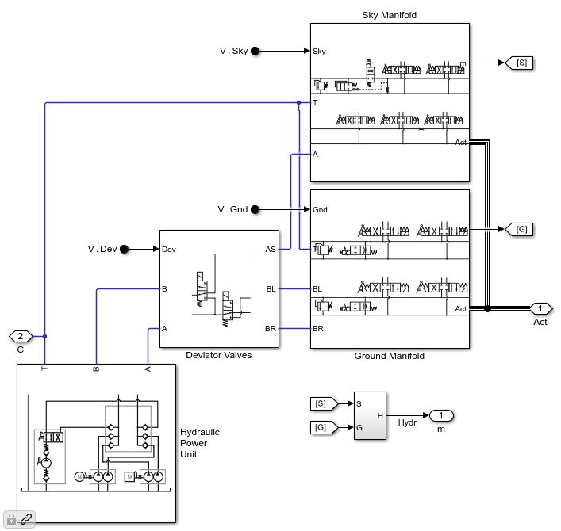Simulation Results: Full Sequence
The plots below shows the result of a test sequence designed to activate all actuators on the boom lift.
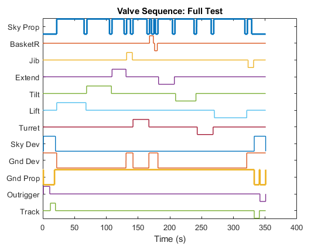 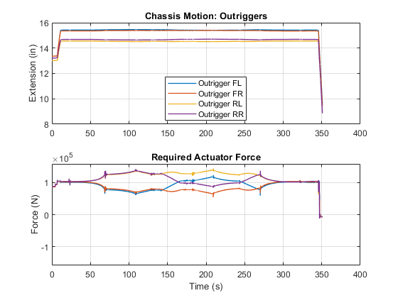 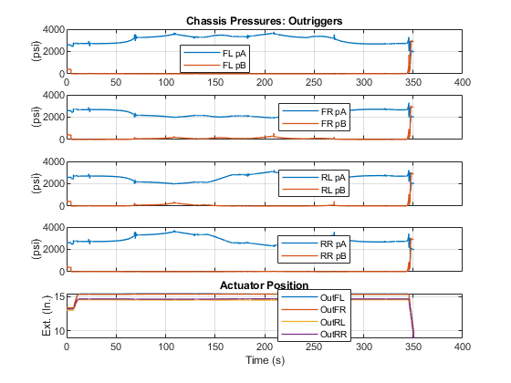 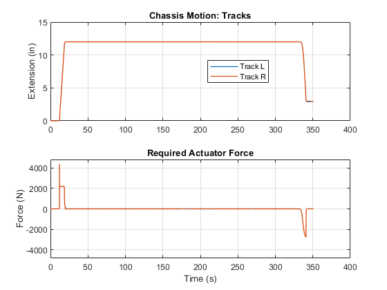 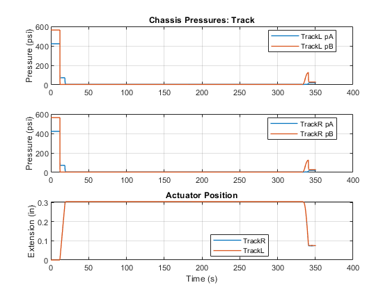 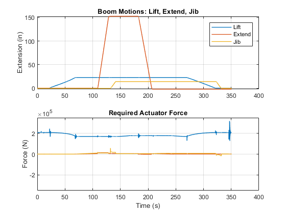 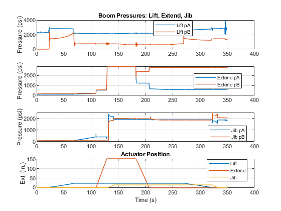 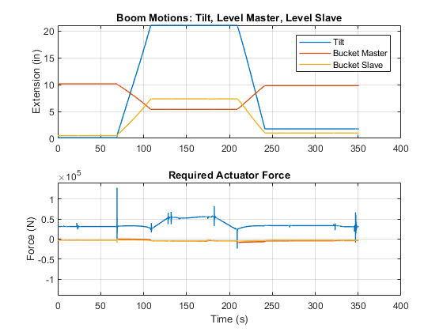 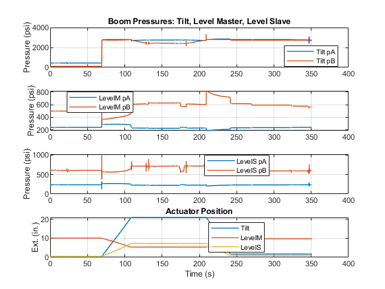 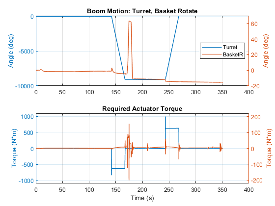 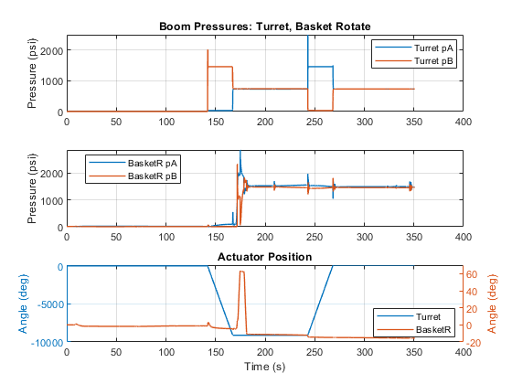
Motion of the outriggers along with applied actuator force.

Pressures of the outriggers along with actuator position.

Motion of the tracks along with applied actuator force.

Pressures of the track actuators along with actuator position.

Motion of the lift, extend, and jib actuators along with applied actuator force.

Pressures of the lift, extend, and jib actuators along with actuator position.

Motion of the tilt, and basket leveling actuators along with applied actuator force.

Pressures of the tilt, and basket leveling actuators along with actuator position.

Motion of the turret and basket rotation actuators along with applied actuator torques.

Pressures of the turret and basket rotation actuators along with actuator position.